Uma rolagem pode mudar tudo. Sua próxima aura pode ser lendária, e é nesse instante que a
sorte
revela seu verdadeiro poder.
Afinal, a sorte não espera — ela acontece.
Cada bioma é uma nova chance de glória, trazendo consigo mistérios, desafios e recompensas
únicas.
A cada giro, uma emoção: a verdadeira adrenalina está em cada rolagem.
Em um piscar de olhos, você pode ir do comum ao impossível — tudo em um instante. Mas
lembre-se:
somente os corajosos encaram o inesperado.
O brilho de uma aura rara vale cada segundo investido, porque você nunca sabe o que vem
depois...
No fim, resta apenas a pergunta: sorte ou destino? Descubra no próximo giro.
Sinopse
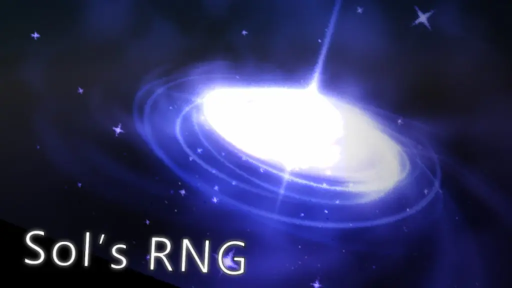
O jogo Sols-RNG pode ser compendido como uma experiência centrada na mecânica de azar e
probabilidade,
em que o jogador busca obter auras e poderes raros a partir de giros aleatórios.
Essa estrutura faz parte de um gênero crescente dentro do Roblox que explora o fascínio humano pela
aleatoriedade controlada,
semelhante a sistemas de loot boxes presentes em jogos comerciais.
Do ponto de vista psicológico, Sols-RNG se apoia no reforço intermitente,
um conceito da psicologia comportamental que mantém os jogadores engajados,
já que a cada giro existe a possibilidade — mesmo que pequena — de conquistar uma aura rara.
Essa incerteza cria um ciclo de expectativa, frustração e euforia,
que aumenta o tempo de permanência no jogo.
Além disso, o design visual das auras e os efeitos cósmicos funcionam como gatilhos de recompensa
sensorial,
intensificando a sensação de progresso e conquista.
O jogo, portanto, não depende apenas da sorte, mas também da percepção subjetiva de valor,
onde a raridade se transforma em status dentro da comunidade de jogadores.
Assim, Sols-RNG pode ser interpretado como uma metáfora digital para a busca incessante de
recompensas
improváveis,
unindo elementos de sorte, estética e interação social —
uma fórmula que o torna viciante e culturalmente relevante dentro da plataforma Roblox.
Auras
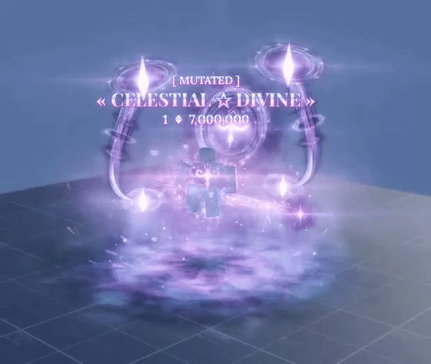
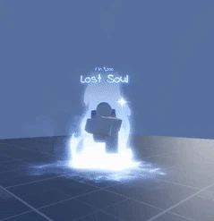
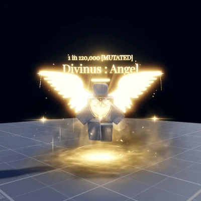
As auras representam não apenas efeitos visuais, mas também a expressão máxima da progressão dentro de
Sols-RNG.
Cada aura é resultado direto da mecânica de sorte (RNG – Random Number Generator),
o que lhes confere um caráter de raridade e exclusividade.
Do ponto de vista estético, as auras são construídas para transmitir identidade e status.
Jogadores com auras raras tornam-se referências dentro do servidor,
funcionando como símbolos de prestígio social e reconhecimento comunitário.
Nesse sentido, a aura não é apenas um item cosmético:
ela é um marcador de valor dentro da lógica cultural do jogo.
Sob a perspectiva psicológica, as auras exploram a ideia de reforço positivo.
O brilho, as cores dinâmicas e os efeitos cósmicos desencadeiam sensações de conquista e
pertencimento.
Quanto mais rara a aura, maior o impacto emocional,
reforçando o ciclo de engajamento do jogador.
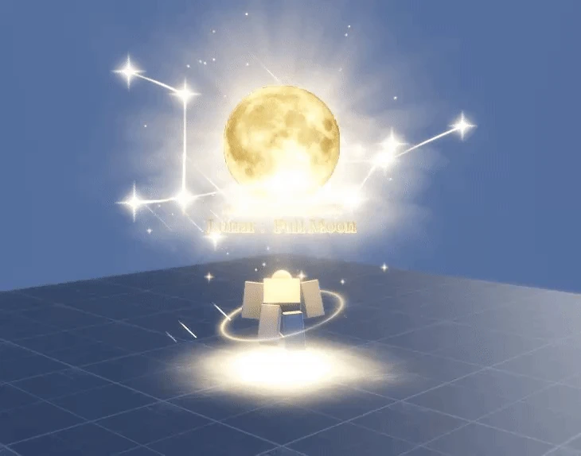
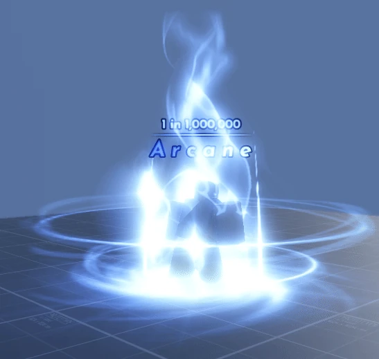
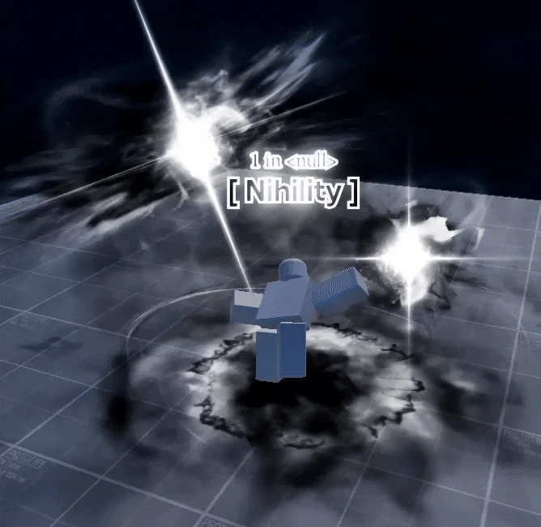
Cutscene
Cutscene
Exemplo de uma cutscene, ao conseguir a aura "Stargazer"
Quando o jogador consegue uma nova aura em Sols-RNG, o jogo não apenas informa o feito —
ele celebra o momento através de uma animação vibrante, carregada de luzes, efeitos sonoros e
partículas.
Esse instante cria uma sensação de clímax emocional,
funcionando como a “explosão” de recompensa após a espera e a incerteza do giro.
A animação traz expectativa: o jogador percebe que “algo diferente” está acontecendo.
Esse atraso entre a ação (girar) e o resultado (receber a aura) aumenta a tensão emocional
e prepara a mente para uma recompensa de alto valor.
As cores intensas, os brilhos cósmicos e o som de triunfo funcionam como gatilhos sensoriais
que ativam áreas do cérebro ligadas ao prazer e à vitória.
É o mesmo mecanismo que faz fogos de artifício em celebrações despertarem euforia coletiva.
Além da satisfação individual, existe o efeito comunitário:
outros jogadores no servidor percebem a conquista.
Isso reforça a sensação de status e pertencimento,
já que o novo portador da aura se destaca visualmente.
Outras atividades
além de simplesmente farmar Auras, Sol’s RNG oferece várias outras atividades que enriquecem a experiência,
tornando o jogo mais dinâmico e atraente. Aqui vão algumas coisas que você pode fazer:
Obby
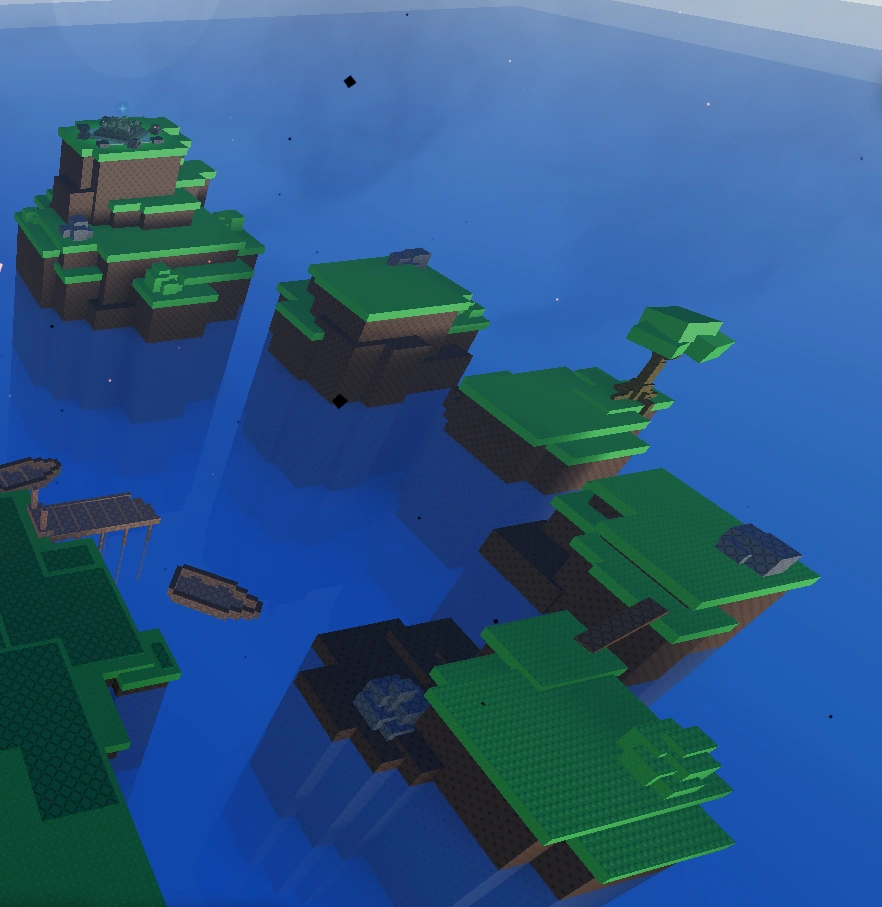
Imagem do obby, que é relativamente pequeno e fácil de se concluir
Há pelo menos dois cursos de obstáculos no mapa: um na “Sol’s Island” e outro na Caverna.
Quando você completa esses obbys, ganha um bônus de sorte temporário (por exemplo +30% de Luck por 60
segundos) que ajuda nos rolls.
Fishing
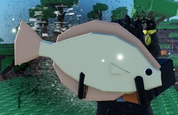
É possível pescar a partir de certas partes do mapa costeiras. Há vários tipos de peixes para coletar
(alguns mais raros ou mutações raras) e esses peixes podem ser vendidos para NPCs, gerando uma moeda
específica de pesca.
Quests
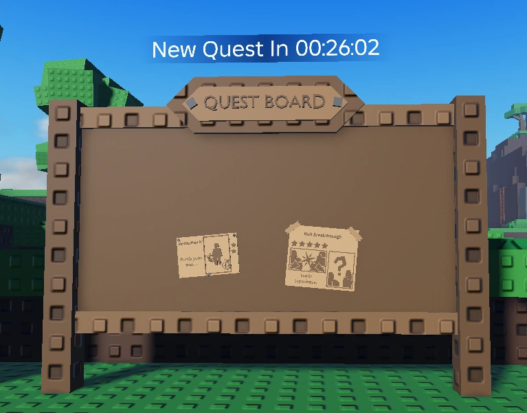
O jogo tem um quadro de missões (“Quest Board”) onde é possível pegar missões de diferentes níveis (nível 1
a 5), com recompensas variadas.
Crafting
Equipamentos
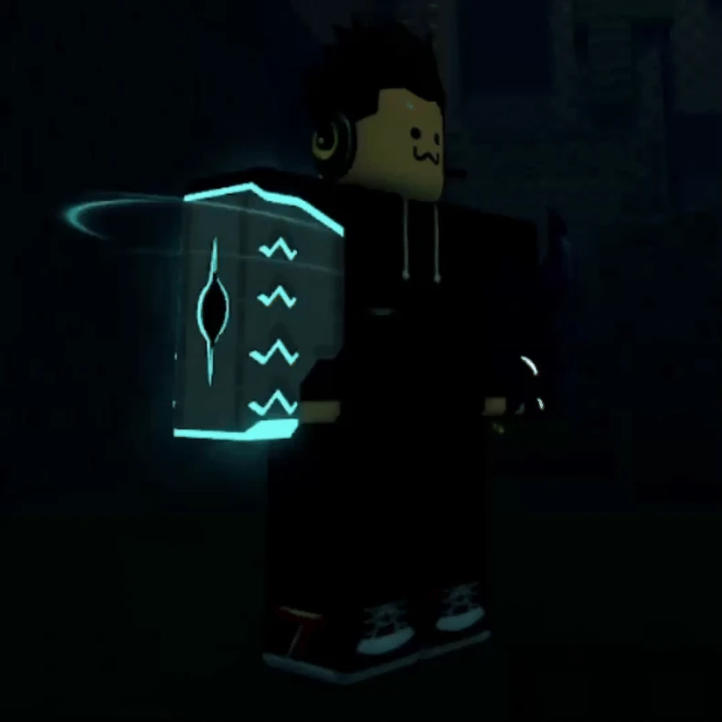
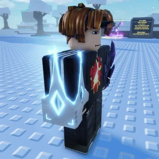
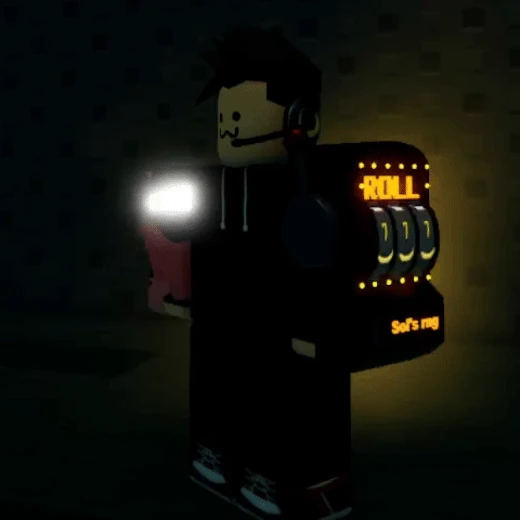
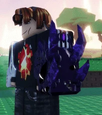
Que aumentam Luck ou diminuem o cooldown de rolagem. Exemplos: luvas, dispositivos que melhoram sua
performance ao rolar.
Poções
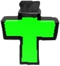
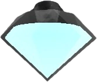
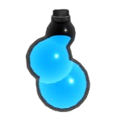
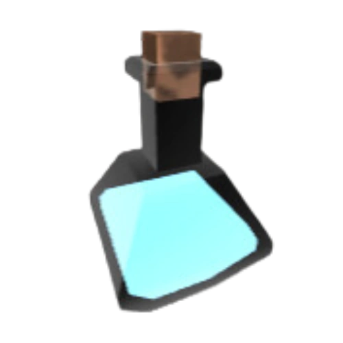
As poções dão bônus temporários como aumento de sorte ou aceleração no cooldown. Algumas são comuns,
outras mais poderosas, craftadas com ingredientes ou auras.
Aura Crafting
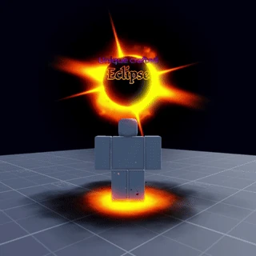
Aqui é onde você pode “melhorar” ou criar versões alternativas ou upgrade de auras.
Boss Raids
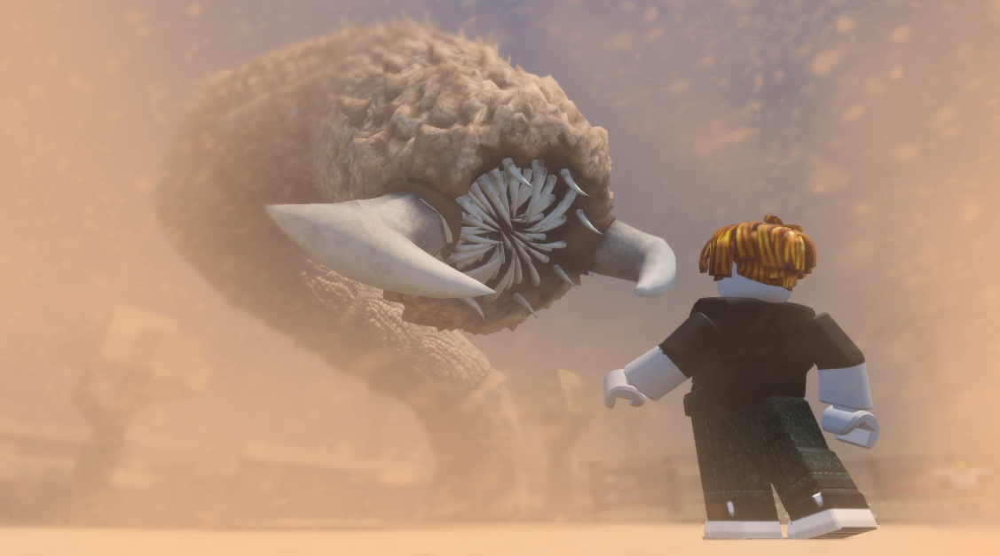
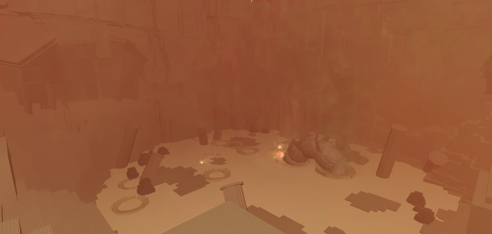
Há pelo menos um chefe (“The Crawler”, o Sandworm) acessível via um portal de Boss Raids. Derrotar esse
chefe dá recompensas especiais como XP e poções.
Eventos
O jogo ocasionalmente introduz biomas novos com Auras exclusivas, eventos sazonais, lojas de itens/eventos
especiais, e mecânicas temporárias.
Biomas
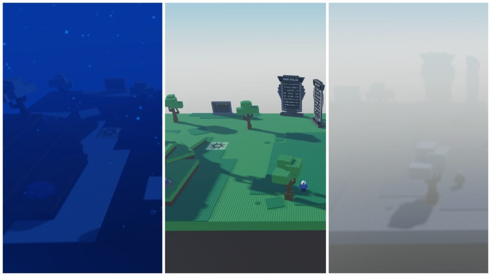
No Sol’s RNG, os biomas são áreas únicas do mapa que transformam completamente
a experiência do jogador.
Cada bioma possui estética própria, mecânicas especiais e recompensas exclusivas,
indo muito
além do simples ato de rolar por auras.
Eles desempenham um papel essencial tanto na ambientação quanto na progressão do
jogo,
oferecendo oportunidades distintas:
seja através de itens raros, missões especiais, desafios únicos ou auras que só podem ser
obtidas naquele ambiente.
Explorar diferentes biomas é, portanto, uma parte estratégica e recompensadora da jogabilidade.
Normal
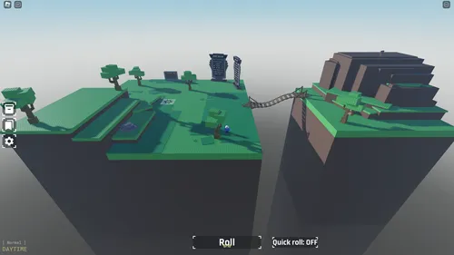
O bioma básico, gerado naturalmente. Este bioma não possui nada de especial, não há auras
que
estejam relacionadas à este bioma.
É o bioma padrão do jogo e não possui nenhum recurso.
🌬️ Windy Biome
[Windy]: Uma brisa refrescante percorre o mundo, trazendo movimento às árvores e leveza
ao
ambiente.
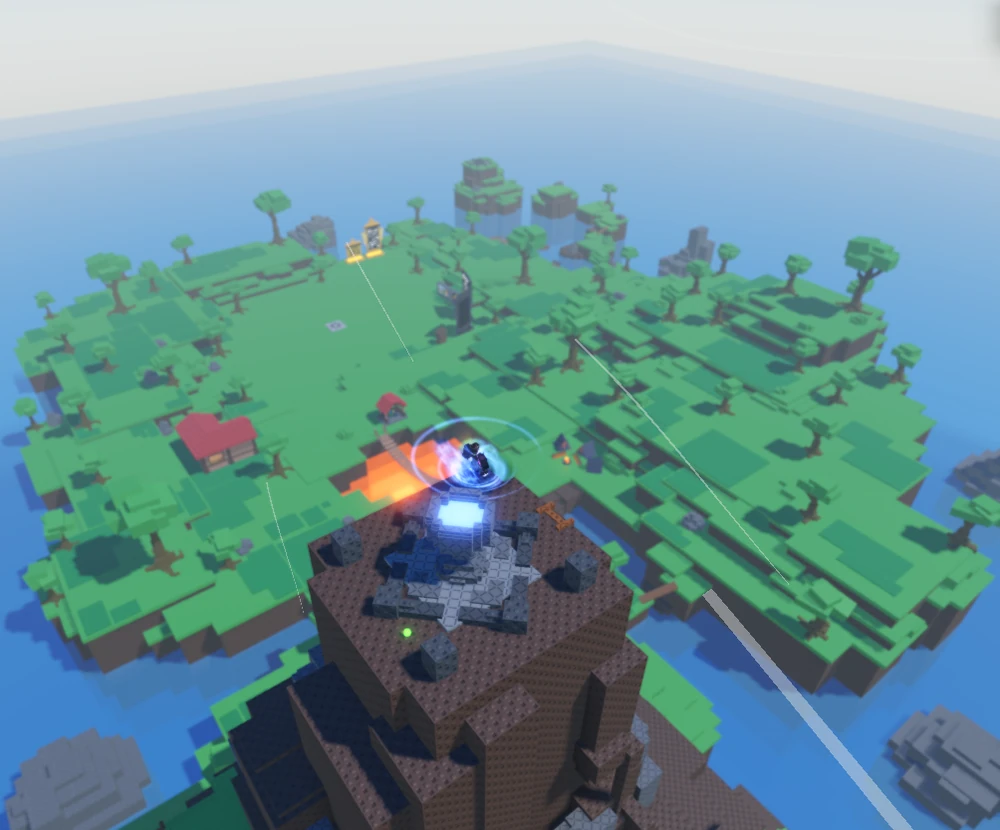
O Windy Biome é uma variação do Natural Biome, mas com um detalhe especial: o
cenário
ganha
efeitos de vento
que fazem as folhas das árvores dançarem, criando uma atmosfera viva e agradável.
Esse é o bioma mais comum do jogo, com uma taxa de aparecimento de 1 em 500 (0,2%).
Apesar de parecer
baixo, na prática o Windy Biome surge com bastante frequência, podendo até aparecer várias
vezes
seguidas.
Sua duração máxima é de 2 minutos, e durante esse tempo ele gera a Wind
Essence,
um item que pode
ser oferecido no Graal para garantir um pequeno boost extra.
Além disso, o Windy Biome influencia diretamente nas chances de rolagem, aumentando a
probabilidade de conseguir
algumas auras raras. Entre elas estão:
Flow
Stormal
Hurricane
Aviator
Maelstorm
❄️ Snowy Biome
[Snowy]: A neve branca e o frio começam a cobrir todos os
arredores.
No Snowy Biome, a transformação do cenário é marcante: o verde do mapa
desaparece sob um manto branco de neve, o céu ganha um tom mais pálido
e delicados flocos
descem em partículas, criando uma atmosfera invernal imersiva.
Embora seja um pouco mais raro que o Windy Biome, o Snowy ainda é considerado um
bioma
comum.
Ele aparece com uma chance de 1 em 600 (aprox. 0,17%) e permanece ativo por
até
2 minutos.
Durante sua duração, ele gera o item Icicle, que pode ser oferecido no Graal para
garantir um bônus extra.
Assim como o Windy, esse bioma também aumenta as chances de encontrar algumas auras
específicas,
tornando a busca por elas muito mais favorável. Entre as auras ligadas ao Snowy Biome,
estão:
Glacier
Permafrost
Blizzard
🌧️ Rainy Biome
[Rainy]: Ventos fortes e chuvas intensas varrem o mundo.
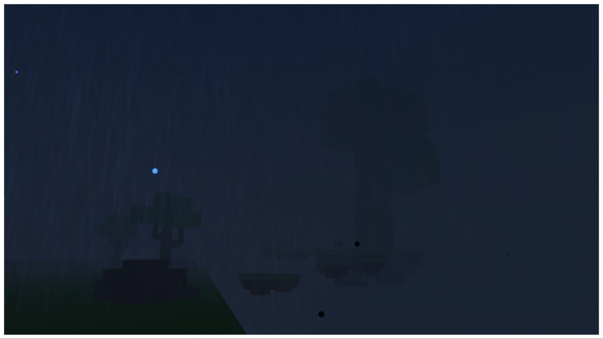
O Rainy Biome traz uma atmosfera única e carregada. Seja de manhã ou à
noite, o mapa ganha um ar denso e melancólico: a chuva cai incessantemente,
os ventos uivam
e as árvores balançam sob a tempestade, criando um ambiente imersivo e dramático.
Ele completa a chamada “trindade dos biomas comuns” junto com o Windy e o Snowy,
mas
entre eles é o mais raro.
Sua chance de surgimento é de 1 em 750 (aprox. 0,13%),
com duração máxima de
2 minutos.
Durante sua aparição, o Rainy Biome gera o item Rainy Bottle, que pode ser oferecido
no
Graal para garantir um leve bônus adicional.
Esse bioma também facilita a obtenção de algumas auras exclusivas, incluindo uma com mutação
especial. As auras favorecidas são:
Poseidon
Sailor
Sailor: Flying Dutchman
Abissal Hunter
🏜️ Sandstorm Biome
[Sandstorm]: Uma intensa tempestade de areia bloqueia o seu
caminho.
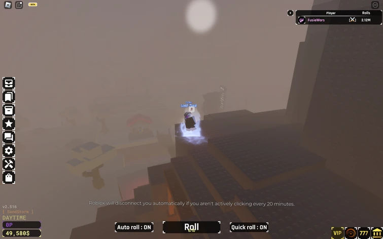
O Sandstorm Biome traz ao mapa uma ambientação desértica marcante: o
verde
da vegetação é substituído por tons amarelados de areia, enquanto uma tempestade árida
envolve tudo em poeira e vento, criando uma atmosfera misteriosa e hostil.
Introduzido na atualização da Era 9, este bioma é significativamente mais
raro
que os anteriores,
surgindo com uma chance de apenas 1 em 3000 (aprox. 0,03%).
Sua aparição não é comum, e quando acontece, torna-se um evento especial.
Diferente dos biomas comuns, o Sandstorm possui uma duração prolongada,
podendo
permanecer ativo por até 11 minutos.
Durante esse período, ele gera o item Hour Glass, que pode ser oferecido no Graal
para
garantir um bônus extra mais poderoso do que os biomas anteriores.
Além disso, o Sandstorm Biome aumenta as chances de conquistar quatro auras especiais, entre
elas algumas extremamente cobiçadas:
Gilded
Jackpot
Anubis
ATLAS
🔥 Hell Biome
[Hell]: Uma energia caótica, forte e violenta toma conta do
mundo.
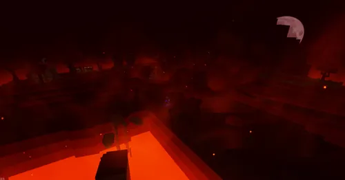
O Hell Biome traz uma estética infernal e vulcânica, transformando o
mapa
de forma drástica.
O céu escurece, a terra ganha tons avermelhados e as águas se convertem em rios de lava
incandescente.
Partículas em chamas flutuam no ar, criando um cenário opressor e envolto em destruição.
Lançado na atualização da ERA 7, o Hell Biome é ainda mais raro que o
Sandstorm.
Ele aparece com uma chance de apenas 1 em 6.666 (aprox. 0,02%) e pode
permanecer ativo por até 11 minutos, tornando sua presença um acontecimento
excepcional.
Durante sua existência, esse bioma gera o item Eternal Flame, que pode ser
oferecido
no
Graal para receber um bônus extra mais poderoso do que os obtidos nos biomas básicos (Windy,
Snowy e Rainy).
Além do impacto visual, o Hell Biome também aumenta as chances de obter algumas auras
extremamente raras e sombrias, como:
Undead
Undead: Devil
Hades
+ B L O O D L U S T +
🌌 Starfall Biome
[Starfall]: Uma chuva de estrelas belas e oníricas ilumina
o
mundo.
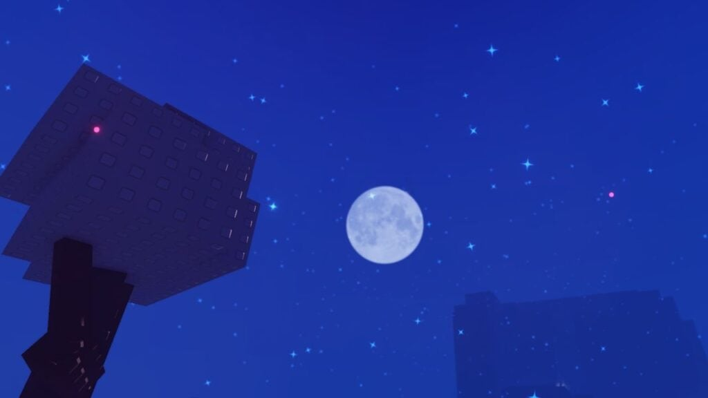
O Starfall Biome transforma o mapa em um cenário mágico e etéreo.
Uma densa neblina azul envolve o ambiente, enquanto o céu se ilumina em tons
azulados e
partículas em forma de estrelas caem lentamente, criando uma atmosfera de sonho e
admiração.
Considerado um bioma raro, o Starfall surge com a chance de 1 em
7.500 (aprox. 0,013%).
Sua aparição é especial e dura até 10 minutos, oferecendo uma experiência
única
e memorável no mapa.
Durante esse período, ele gera o item Stella's Star, que pode ser oferecido no Graal
para
obter um bônus extra, ou utilizado para completar a missão especial da personagem Stella.
Além disso, o Starfall é um dos biomas que mais favorecem a obtenção de auras, com um total
de
11 auras distintas, incluindo duas mutações raríssimas. Entre elas estão:
Starlight
Star Rider
Comet
Astral
Galaxy
Stargazer
Starscourge
Sirius
STARSCOURGE: RADIANT
🔆 Astral: Zodiac ☾
GARGANTUA
☠️ Corruption Biome
[Corruption]: Uma poluição venenosa se espalha por todo o
mundo.
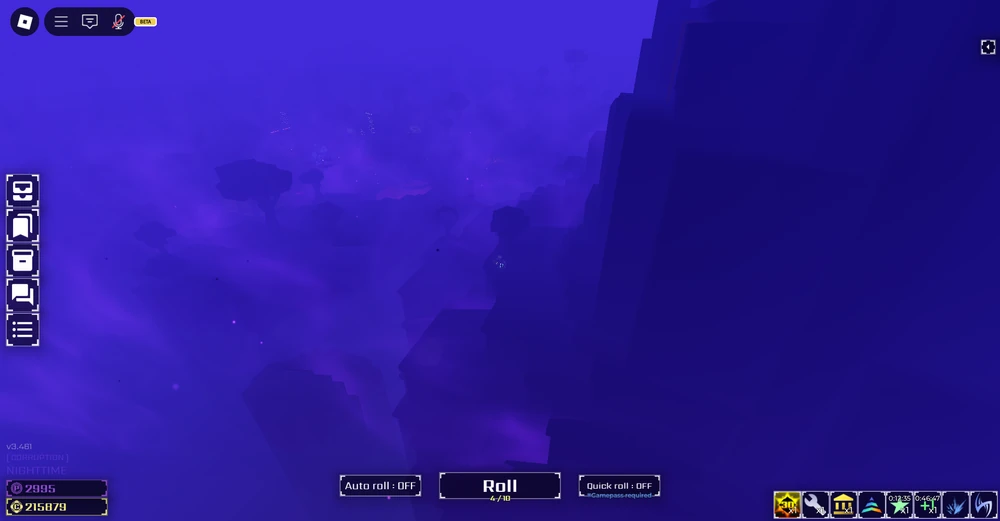
Quando o Corruption Biome surge, o mapa se transforma completamente:
uma
névoa púrpura tóxica envolve o ambiente, a água ganha um tom roxo estranho, e o cenário
inteiro adquire uma atmosfera sombria, poluída e visualmente impactante, deixando
claro
que
este é um bioma perigoso e único.
Este é um dos biomas mais raros do jogo, com uma chance de 1 em 9.000
(aprox.
0,011%) de aparecer.
Sua raridade torna cada aparição um evento especial, exigindo atenção e estratégia do
jogador.
Durante a sua presença, ele gera o item Curruptaine, que pode ser oferecido no
Graal para
receber um leve bônus, ou utilizado para fabricar o Strange Controller,
permitindo que o jogador altere biomas manualmente.
Além disso, o Corruption Biome aumenta as chances de conseguir cinco auras exclusivas,
incluindo
uma mutação rara. As auras favorecidas neste bioma são:
Hazard
Corrosive
HAZARD: RAYS
Astral
Impeached
🕳️ Null Biome
[Null]: It's too dark here.
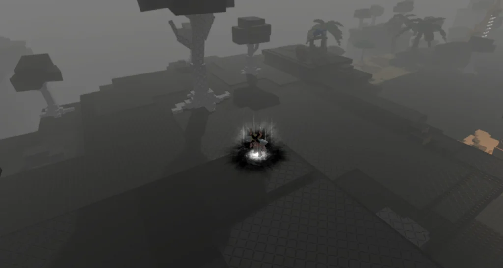
O NULL Biome é um espaço quase surreal, como se a própria realidade do mapa estivesse
corrompida de forma sombria.
Quando ele aparece, o ambiente fica em tons cinza e negros, com partículas algumas
escurtas no ar.
Extremamente raro, com chance de 1 em 10,100 (0,0075%), sua duração é
curta, tendo um tempo máximo de 1 minuto 39 segundos.
Ele gera o item Null Fragment,
Ao surgir, ele pode gerar o item Null Fragment, que pode ser usado para
ser oferecido no Graal para obter bônus temporários mais fortes que biomas comuns ou pode
ser usado para o craft do Strange Controller,
O Null Biome facilita a obtenção das seguintes auras exclusivas:
Undefined
Nihility
Glitched
[Manager]:
Unexpected error occurred. [Code 404]
[Manager]:
[Code 404] has resolved.
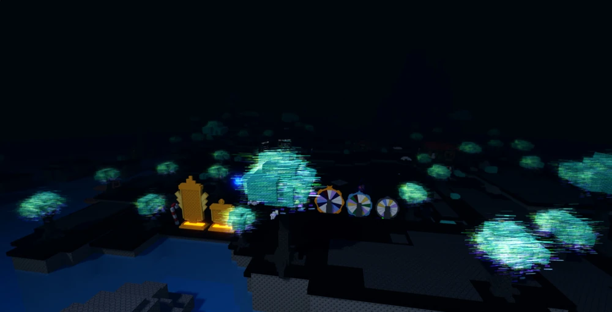
O visual do Glitched Biome faz referência a erros e bugs de um código.
Quando ele surge, todo ambiente fica escuro, as àrvores ficam com efeito de erro, um
cenário totalmente escuro e negro.
O Bioma Glitched é muito raro, e muito desejado pelos jogadores, tendo uma raridade de 1 em
30,000 ou uma porcentagem de 0,003%,
torando quase impossível a sua aparição.
Ainda que seja raro, o seu tempo de duração é relativamente grande em comparação ao Null,
tendo um tempo máximo de 2 mintuos e 44 segundo
até sumir novamente.
As auras que o Bioma facilita em obter, e são aclamadas pelos jogadores, são:
Fault
Glitch
Oppression
Limbo
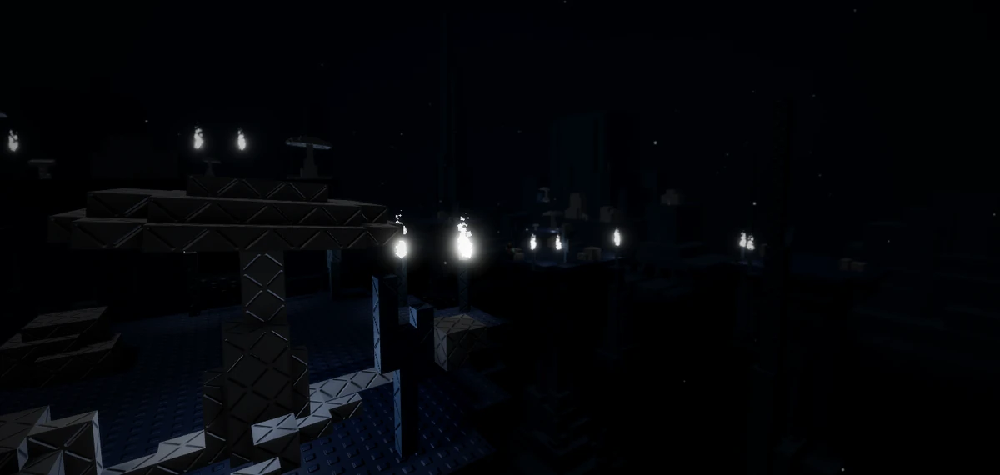
O Limbo é uma dimensão isolada composta por ilhas flutuantes em um vasto vazio escuro,
iluminadas por tochas que conectam os caminhos entre elas. O ambiente é sombrio e
misterioso, com formações de estalagmites e fungos gigantes substituindo árvores, criando
uma paisagem surreal e onírica.
O Limbo é muito escuro e difícil de se ver.
Para acessar o Limbo, o jogador deve completar uma série de missões especiais que envolvem a
coleta de itens e a ativação de velas específicas.
Cada vela requer condições
especiais para ser acesa, como estar em um bioma específico ou possuir certos buffs ativos.
Uma vez que todas as velas estejam acesas, um portal se abrirá, permitindo a entrada na
dimensão do Limbo.
Dentro do Limbo, os jogadores podem obter auras exclusivas que não estão disponíveis em
outros biomas. Algumas dessas auras incluem:
Raven
Anima
Juxtaposition
Unknown
Elude
Prologue
Dreamscape
Eden
Weather
Events
O Sol’s RNG é um jogo dinâmico que frequentemente organiza eventos sazonais e especiais,
oferecendo aos jogadores novas experiências, auras exclusivas e mecânicas temporárias.
Esse eventos são uma parte essencial da comunidade, promovendo engajamento e proporcionando
conteúdos únicos.
Aqui vai uma lista dos eventos que já ocorreram no Sol's RNG:
Christmas 2023
Valentine's Day 2024
Easter 2024
Summer 2024
Halloween Event 2024
Winter Event 2025
April Fools 2025
Easter Event 2025
Summer Event 2025
Pass RNG
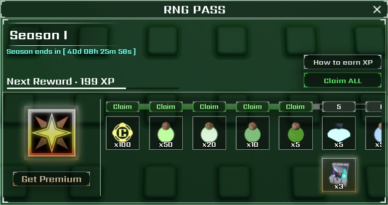
Imagem do primeiro Pass lançado
O Pass no Sol’s RNG (geralmente chamado de Season Pass ou Premium Pass) é um sistema de recompensas por
níveis que dá aos jogadores benefícios conforme eles vão subindo de nível (“Pass XP”).
Ele funciona por temporadas (Season I, Season II, etc.), ou seja, há um tempo limitado onde o Pass está
ativo. Fora desse tempo, você não consegue mais reivindicar as recompensas daquela temporada.
O Pass do Sols' RNG pode dar diversas recompensas para o jogador, recompensas como:
Poções
Auras exclusivas
Badges exclusivas
Runas em baús
Boosts do evento
Final
Sols-RNG se configura como uma experiência digital que vai além do simples entretenimento:
ele combina aleatoriedade, estética e interação social para criar um ciclo de engajamento intenso.
A mecânica de RNG, central ao jogo, não apenas desafia a sorte do jogador,
mas também explora profundamente o prazer psicológico da incerteza e da conquista.
As auras, com seus efeitos visuais e simbólicos, funcionam como marcadores de prestígio,
reforçando a dimensão social e competitiva dentro da comunidade.
Cada nova aura obtida, especialmente através da animação cuidadosamente projetada,
gera um impacto emocional significativo,
transformando um simples prêmio virtual em um momento de clímax pessoal e reconhecimento coletivo.
Do ponto de vista lúdico, o jogo demonstra como a interatividade digital e o design de recompensas
podem ser utilizados para criar experiências memoráveis,
mesmo em ambientes relativamente simples como o Roblox.
Ao explorar estética, emoção e status, Sols-RNG não apenas entretém,
mas também evidencia princípios de psicologia comportamental aplicados a jogos,
como o reforço intermitente e a valorização da raridade.
Em suma, Sols-RNG é um exemplo de como a combinação de sorte, estética e engajamento social
pode resultar em um jogo viciante e culturalmente relevante dentro da plataforma Roblox,
oferecendo ao jogador tanto emoção imediata quanto uma narrativa pessoal de conquista e reconhecimento.
 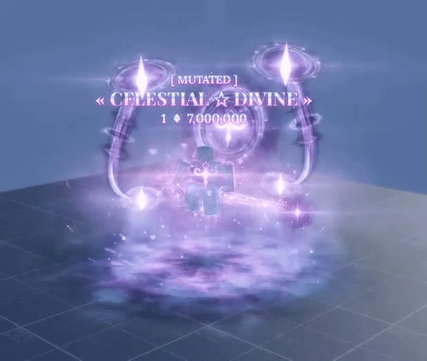
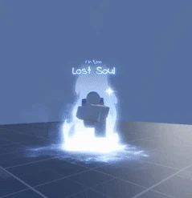
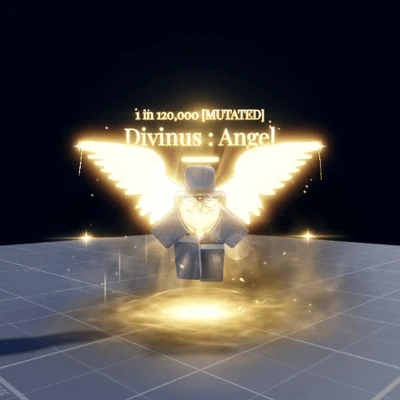
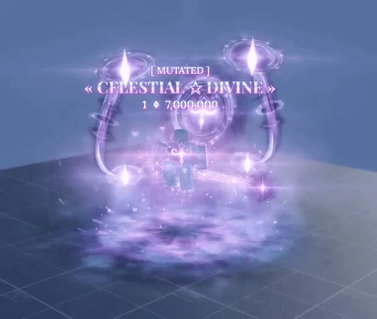
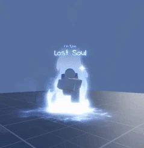
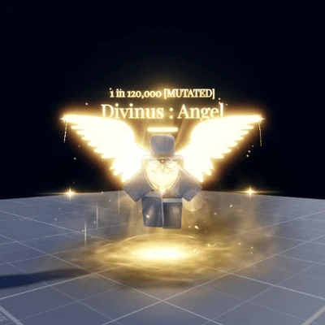
 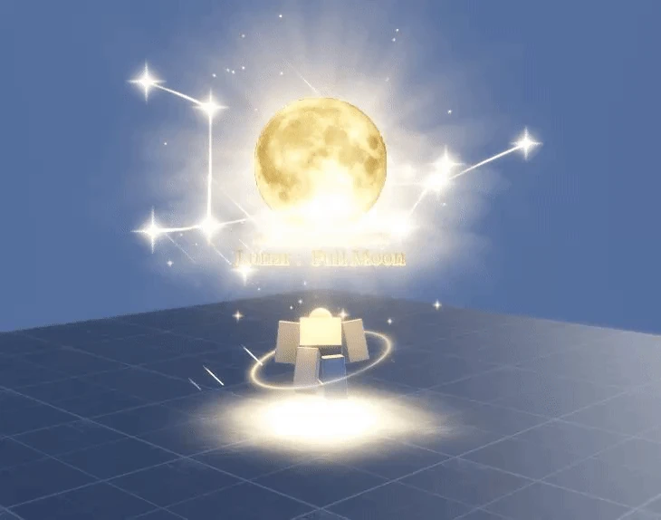
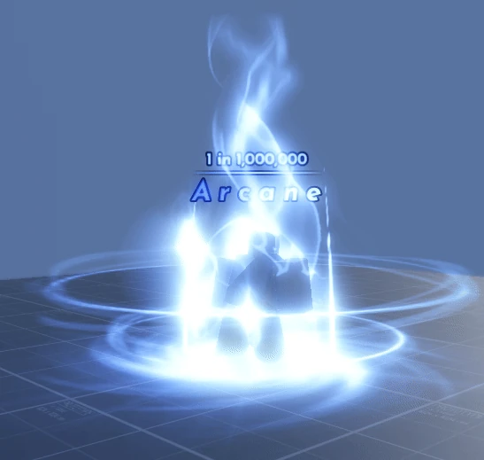
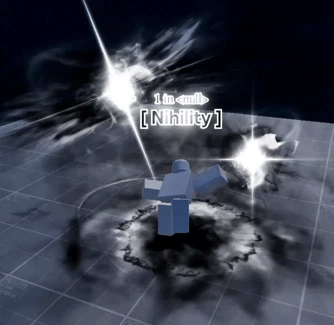
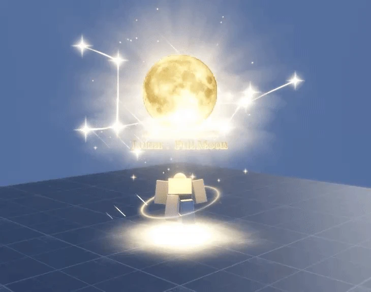
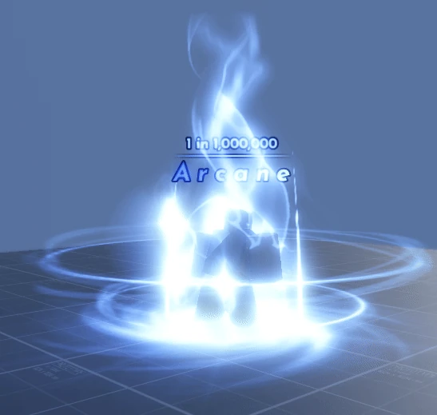
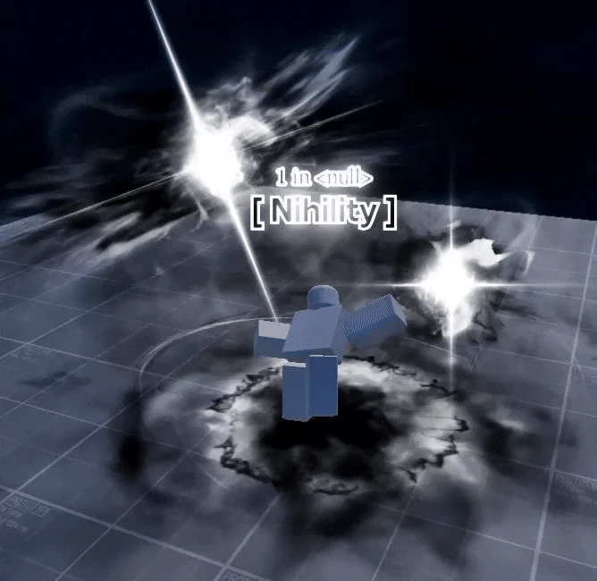
 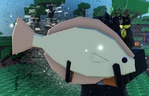
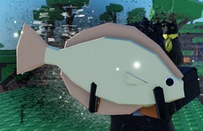